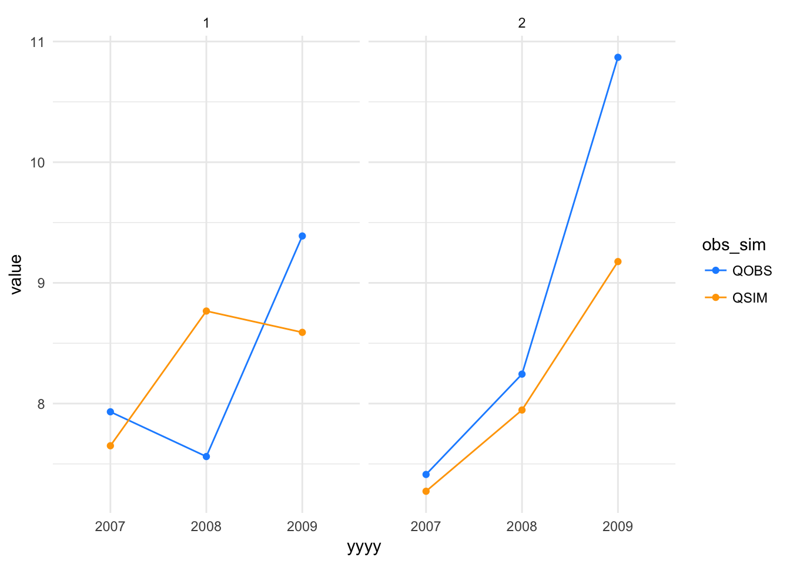
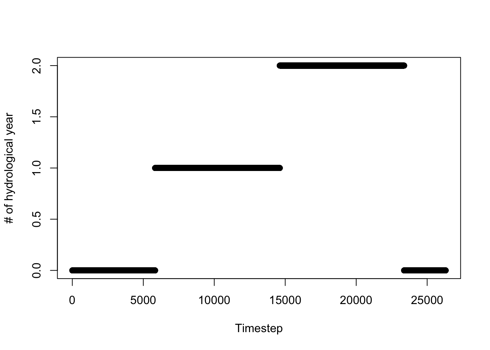

Chapter 3 Runoff Peaks
The function peack lets users explore the highest events in among the available basins. It provides a list of ggplot2 plots, containing an overview plot (overview), a scatter plot (scatter) and detail plots of the individual events (event_plot). Instead of explaining the properties of each plot in detail it is best to get an intuition of the function by looking at some examples.
3.1 Examples:
For the examples 10 events are extracted from a runoff example
library(coscos)
library(visCOS)
cos_data <- viscos_example()
peakplots <- peack(cos_data, action = "plots", n_events = 10L)The peakplots list does now contain plots for each basin within the cos_data data.frame:
names(peakplots)## [1] "basin0001" "basin0002"For each basin the a set of plots (overview,scatter,event_plot) are saved within a list for each basin. In the following the plots for basin 1 are shown:
names(peakplots$basin0001)## [1] "overview" "scatter" "event_plot1" "event_plot2" "event_plot3"
## [6] "event_plot4" "event_plot5" "event_plot6" "event_plot7" "event_plot8"
## [11] "event_plot9" "event_plot10"The overview plot shows the entire time series of data1 and data2 of the basin. The found events are marked with black dots. The overview plot for basin 1 is:
peakplots$basin0001$overview
The scatter plot shows the found events within a scatter plot, where data1 is the x-axis and data2 on the y-axis. In the following an example for basin 1 is given.
peakplots$basin0001$scatter
Detail plots for each of the found events are given in form of the event_plot objects. Here an example:
peakplots$basin0001$event_plot5
3.2 Code
This part of the document defines the code of peack
# --------------------------------------------------------------------------
#' Event-wise Exploration of the high-runoffs
#'
#' @export
#'
#' @import ggplot2
#' @import dplyr
#' @import magrittr
#' @importFrom tibble tibble
peack <- function(cos_data,
action = "compute",
n_events= 10L,
window_size = 24L,
opts = coscos::viscos_options()) {
# pre:
action_string <- match.call(expand.dots = FALSE) %>%
.["action"] %>%
.[[1]] %>%
as.character(.)
if (length(action_string) == 0) {
action_string = "compute"
}
#
cosdata <- coscos::cook_cosdata(cos_data)
n_events_int <- as.integer(n_events)
window_size_int <- as.integer(window_size)
if (is.na(n_events_int) |
is.nan(n_events_int) |
is.infinite(n_events_int) |
!is.integer(n_events_int) ) {
stop("n_events is ill defined")
}
if (is.na(window_size) |
is.nan(window_size) |
is.infinite(window_size) |
!is.integer(window_size) ) {
stop("window_size is ill defined")
}
data1 <- cosdata %>%
dplyr::select( starts_with(opts[["name_o"]]) )
data2 <- cosdata %>%
dplyr::select( starts_with(opts[["name_s"]]) )
data_posix <- cosdata %>%
dplyr::select(matches(opts[["name_COSposix"]]))
data_numbers <- names(data1) %>%
gsub(opts[["name_o"]], "", ., ignore.case = TRUE) %>%
gsub("\\D","",.,ignore.case = TRUE)
result_list <- lapply(1:ncol(data1),
function(x) peack_one_basin(data1[ ,x],
data2[ ,x],
data_posix,
n_events_int,
window_size_int,
action_string,
opts)) %>%
set_names(., paste("basin", data_numbers, sep = ""))
return(result_list)
}3.2.1 Peak-Plots for a signle Basin
This is the function for generating the different plots for one basin. At first the provided time series are grouped into a tibble, then the peaks of the observations are obtained via the peak_finder function and organised. Then ggplot2 is used for plotting.
peack_one_basin <- function(qobs,
qsim,
data_posix,
n_events_int,
window_size_int,
action_string,
opts) {
single_data <- cbind(data_posix,qobs,qsim) %>%
magrittr::set_names(c("time","obs","sim"))
#
peak_idx <- find_peaks(single_data$obs,m = window_size_int)
peak_organised <- tibble::tibble(idx = as.integer(peak_idx),
time = single_data$time[peak_idx],
peak_obs = single_data$obs[peak_idx],
peak_sim = single_data$sim[peak_idx])
highest_peaks_organised <- peak_organised$peak_obs %>%
sort(decreasing = TRUE) %>%
.[1:n_events_int] %>%
match(.,peak_organised$peak_obs) %>%
peak_organised[., ]
#
if (action_string == "compute") {
return(highest_peaks_organised)
} else if (action_string == "plots") {
overview_plot <- ggplot( ) +
geom_line(data = single_data, aes(x = time, y = sim),
col = opts[["color_s"]]) +
geom_line(data = single_data, aes(x = time, y = obs),
col = opts[["color_o"]]) +
geom_point(data = highest_peaks_organised, aes(time, peak_obs))
overview_scatter <- ggplot() +
geom_point(data = single_data, aes(obs,sim), color = "#DDDDDD") +
geom_abline() +
geom_point(data = highest_peaks_organised, aes(peak_obs,peak_sim), size = 4) +
expand_limits(x = 0, y = 0)
sub_plots <- lapply(
1:nrow(highest_peaks_organised),
function(x) sub_peakplot_fun(x,
window_size_int,
highest_peaks_organised[x,]$idx,
single_data,
opts)
) %>%
set_names(.,paste("event_plot", 1:length(.), sep = ""))
return(overview = append(list(overview = overview_plot,
scatter = overview_scatter), sub_plots))
} else {
stop("The chosen 'action' does not exist.")
}
}3.2.2 Peak Finding Function
The function for finding the peaks was proposed and developed by the cross validated user “stas g” in this thread.
This is by far not the only option/possibility to approach the peak finding task. Other nice ideas for finding peaks can be found in this cross validated thread.
####
# peak finder function:
find_peaks <- function(x, m = 3){
shape <- diff(sign(diff(x, na.pad = FALSE)))
pks <- sapply(which(shape < 0), FUN = function(i){
z <- i - m + 1
z <- ifelse(z > 0, z, 1)
w <- i + m + 1
w <- ifelse(w < length(x), w, length(x))
if(all(x[c(z : i, (i + 2) : w)] <= x[i + 1])) return(i + 1) else return(numeric(0))
})
pks <- unlist(pks)
pks
}3.2.3 Subplot Function
This function is a wrapper around ggplot, which is used to generate the individual event plots.
####
# sub plot function:
sub_peakplot_fun <- function(x, window_size, idx, peak_data, opts) {
point <- peak_data[idx, ]
plot_sub <- peak_data[(idx - window_size):(idx + window_size), ] %>%
ggplot(data = .) +
geom_line(aes(x = time, y = sim),
col = opts[["color_s"]]) +
geom_line(aes(x = time, y = obs),
col = opts[["color_o"]]) +
geom_point(data = point, aes(time, obs))
return(plot_sub)
}